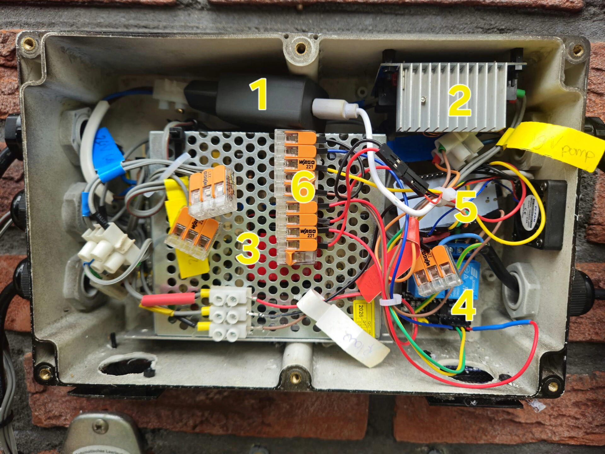
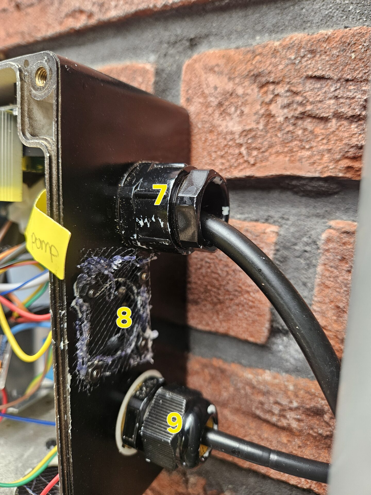
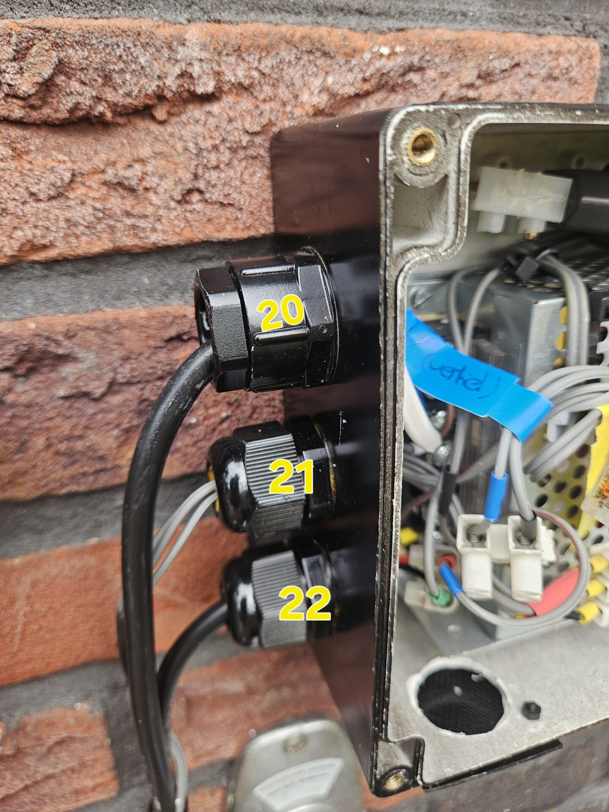
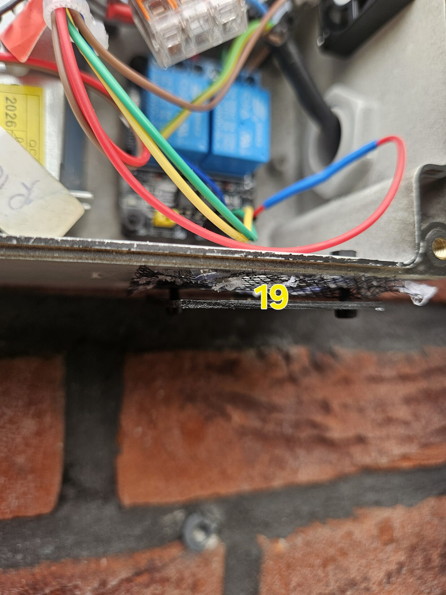
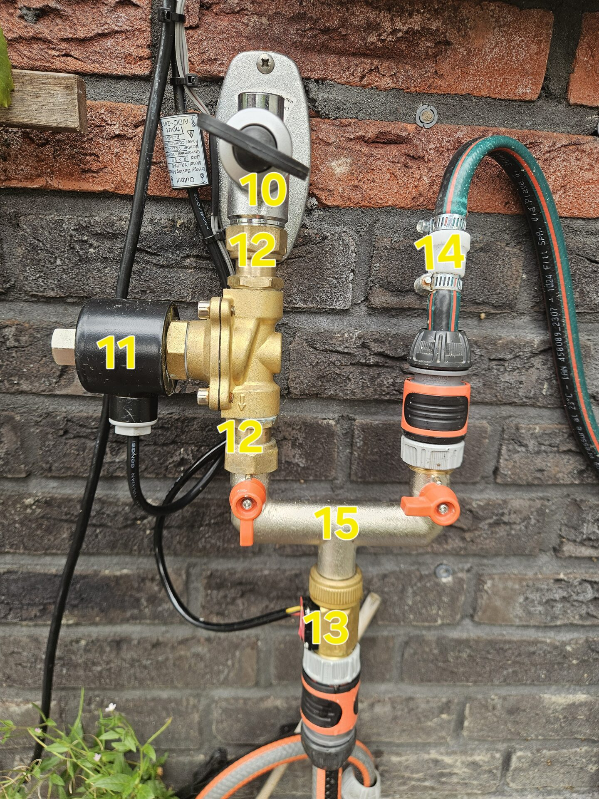
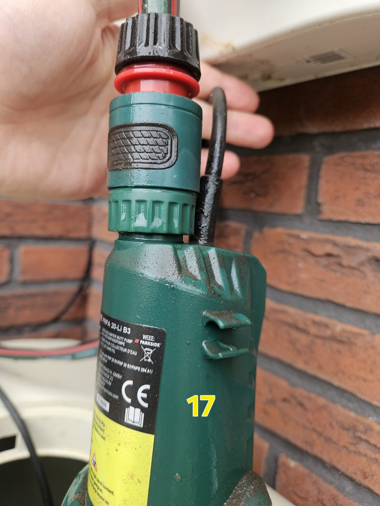
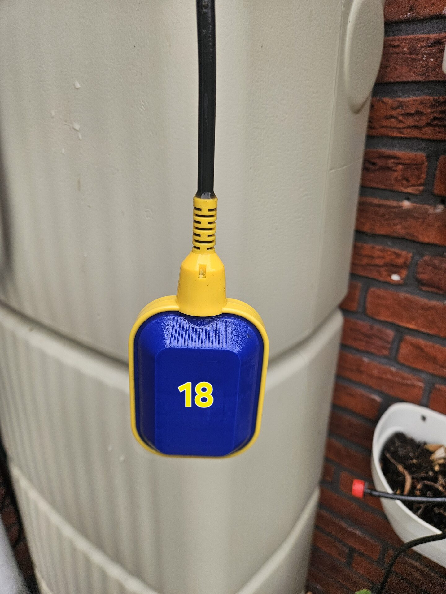

ESPHome + Home Assistant · © 2026 Lucas van der Meer · CC BY-SA 4.0







| # | Component | Specifications | Source |
|---|---|---|---|
| 5 | ESP32 WROOM-32 | Dev board with USB-C | Amazon |
| 3 | 24V switching power supply | Open frame, 5A, 120W | Amazon |
| 2 | Buck converter (20V) | Adjustable DC-DC, 20A/300W. Steps 24V down to 20V for pump. | Amazon |
| 1 | USB 5V power supply | Separate supply for ESP32, fully isolated from 24V circuit. | Any USB charger 5V 1A+ |
| 4 | Relay module, 2-channel 5V | With optocoupler, active-low trigger (SUNFOUNDER). Controls pump and valve. | Amazon |
| 13 | Flow sensor ¾" brass | YF-S201 variant, ~444 pulses/litre. Detects water draw. | Amazon |
| 18 | Float switch | Dry contact, 3 wires (COM/NO/NC), 3m cable. | Amazon |
| 8 | 30mm 5V PWM fan | Enclosure cooling. Controlled via GPIO23, activates above 65°C. | Electronics supplier |
| 6 | Wago 221 connectors | Wire distribution and common ground rail. | Hardware store |
| # | Component | Specifications | Source |
|---|---|---|---|
| 17 | Parkside PRPA 20-Li B3 pump | 20V cordless rain barrel pump, modified for fixed 20V DC via buck converter. | Lidl |
| 11 | Solenoid valve 24V DC NO | ¾" brass, normally open. Heschen 2WK200-20. Closes when pump is active. | Amazon |
| 14 | Non-return valve | Garden hose type. In pump outlet, prevents tap water flowing into barrel. | Amazon |
| 15 | Bradas manifold ¾" brass | 2-input Y-piece with manual shutoff per branch. Combines tap and pump lines. | Bol.com |
| 12 | Swivel coupling ¾" M×F (×2) | Between tap–valve and valve–manifold. Allows mounting without rotating pipe. | Amazon |
| 10 | Wall tap | Existing mains water supply. | — |
| # | Component | Specifications | Source |
|---|---|---|---|
| — | Weatherproof enclosure | Large enough for PSU + electronics. Ventilation holes mean it is no longer fully IP-rated — condensation is the main risk. | Amazon |
| 7 | Cable gland — pump | Watertight entry for 20V pump power cable. | Amazon |
| 9 | Cable gland — float switch | Watertight entry for float switch wiring. | Amazon |
| 20 | Cable gland — 230V mains | Watertight entry for mains power (IEC C13 printer cable, cut and wired directly). | Amazon |
| 21 | Cable gland — flow sensor | Watertight entry for flow sensor signal cable. | Amazon |
| 22 | Cable gland — valve | Watertight entry for solenoid valve cable. | Amazon |
| 19 | Ventilation inlet with fly mesh | Bottom of enclosure. Plastic cover cap prevents direct splash ingress. | Hardware store |
| — | Mains cable (IEC C13 printer cable) | 3-wire with earth, outdoor rated. Cut and wired directly to 24V supply. | Repurposed |